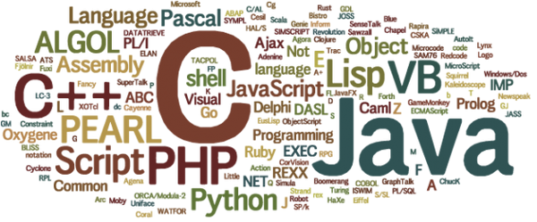

Главная страницаЯзыки программирования |
|
Меню |
В мире, с развитием технологий, появилось огромное множество различных языков программирования, предназначенных для разных целей, имеющих различный синтаксис и прочие отличия. Человеку, решившему связать свою жизнь с компьютерами, программами и вычислительной техникой, неплохо бы в самом начале своего профессионального пути определиться с основным языком (а может и языками), которые ему больше подходят для работы. Но, конечно же, стоит еще понять, что же такое «Язык программирования» Язык программи́рования — формальный язык, предназначенный для записи компьютерных программ. Он определяет набор лексических, синтаксических и семантических правил, определяющих внешний вид программы и действия, которые выполнит исполнитель (обычно — ЭВМ) под её управлением. Или же формальная знаковая система, при помощи которой записываются компьютерные программы. В программировании существует несколько основных направлений:
Языки программирования можно использовать для разных целей:
|